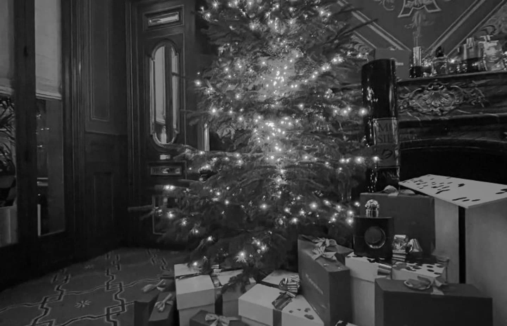
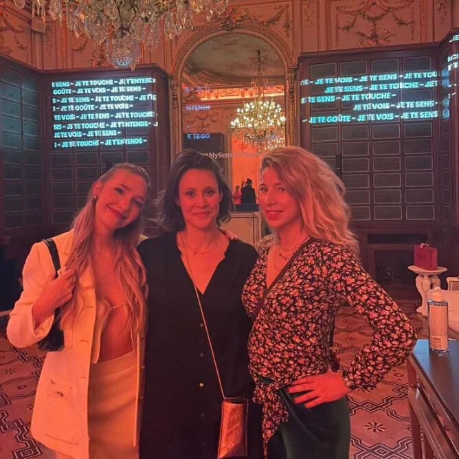
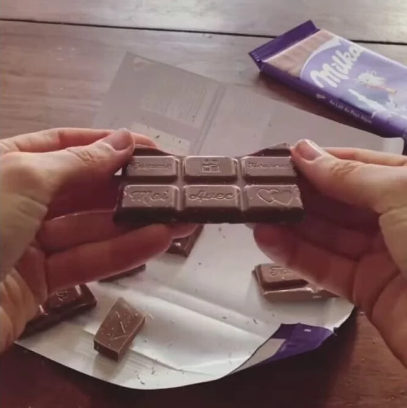

Évènements
My Origines x L'Oréal Luxe

Le projet
Construction d’un casting d’influence sur-mesure et gestion des invitations pour la soirée de Noel Loréal Luxe.
01 •
Le contexte
Lancement de la soirée de Noël de la division L’Oréal Luxe pour mettre en avant plusieurs marques (YSL, Lancôme, Diesel, Cacharel) en partenariat avec MyOrigines. Une approche inédite pour le département qui rassemble ses plus belles marques aux ADN différentes sous le toit d’un événement commun de fin d’année. Un challenge pour Anekdote que de trouver une stratégie d’awareness cross-marques.

02 •
Notre proposition
Construction d’un casting d’influence sur-mesure avec des profils VIP et une prise de parole multi-marques.
Coordination de l’activation influence pour générer du trafic et booster la conversion des produits L’Oréal sur MyOrigines pendant la période des fêtes.
Anekdote m’a permis d’identifier et d’approcher des talents inédits et performants, puis a géré toute la campagne et la coordinatination influence de l’événement de A à Z. Un vrai atout pour atteindre mes objectifs et gagner du temps. »

Le projet suivant